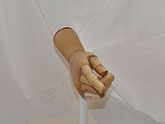

Categorical Perception of Palm Orientation in American Sign Language
by Stephen Richard DeVilbiss Moss
Methods
Participants
Sixty-eight individuals participated in the study. All participants were adults. Three participants were excluded for failure to follow directions, five were excluded due
to disqualifying language experience. Of the remaining sixty participants, 21 individuals reported full hearing loss, 4 individuals reported partial hearing loss, and 35
reported no hearing loss. Participants were recruited in two experience groups: native signers and sign naïve individuals. Within each group, participants were randomly
assigned to one of two primed conditions.
All participants were informed of the nature of the experiment in their preferred language (ASL or English), and individuals consented to participate. Each participant was
compensated either $10 cash or with course credit. Participants were recruited at both University of Maryland, College Park and Gallaudet University.

One example of preliminary tokens used during the experimental development stages.Movement Epenthesis: Without the movement in the beginning, the video would seem un-natural, as if the begining were cut off.
Linguistic Priming Videos
Depicting Prime: This video was played to prime participants of the Depicting language context.Depicting Prime: This video was played to prime participants of the Lexical language context.
Materials
All participants used the Dell XPS 18 Portable All-In-One Computer to complete the experiment. Participants used the touch-screen feature to respond to test trials and
keyboard to enter appropriate information in the demographic questionnaire. All stimuli were modeled by pre-lingually deaf native ASL signers. Token stimuli were filmed
using two Logitech HD Webcam C920 cameras. The first camera—located in front of the signer—filmed the token used in the experiment. The continuum consisted of eleven signs
along a 100 degree range at 10 degree intervals. (See Appendix B) From the beginning of its study, spoken language CP studies have attempted to make tokens more language-like
by presenting the phones in question with another neutral phone as an anchor (Liberman et. al., 1967). In order to simulate this method of triggering language-like perception,
a movement-epenthesis was filmed as part of the sign. The model began with his right hand resting at his side and then moved into the signing position for each token. A black
post was placed in front of the signer to ensure the location of the sign would be the same for each token.
In order to improve accuracy of intervals, a second camera was oriented above the signer and a birds-eye photo of each token was associated with its video component. Each
photo angle was then measured in relation to the base of the post (See Appendix C). The model was filmed signing each token 12 times and the most accurate tokens were
selected for use in the experiment.
The model for the primes was a different pre-lingually deaf, native signer. Primes were designed to use this same continuum and trigger different numbers of categories
within. The Street prime was meant to trigger a schema of the continuum that indicated two categories: To get to the store, drive forward [Cat 1] to the intersection,
then go left [Cat 2]. The store will be on your right. The Clock prime was meant to trigger a schema of the continuum that included four categories: A teacher is giving
a lesson to children by having them gather around a large model clock in front of her. The teacher then explains that when the hand is positioned in this position[Cat 1],
the time is twelve o'clock; when the hand is positioned in this position[Cat 2], the time is nine o'clock; when the hand is positioned in this position [Cat 3] the time is
eleven o'clock; and when the hand is positioned in this position [Cat 4] the time is ten o'clock While the ASL representation of the clock prime is significantly more
succinct than the English shown here, the full prime was only shown at the start of each task. Throughout the tasks, only the second sentence was shown reduce the time
between trials.
Procedure
Two tasks were used to assess the category locations and discriminability along the continuum. Instructions for both tasks were included within the application in English as
well as ASL. Participants were given opportunities to ask questions throughout.
In the identification task, participants were shown a prime, either Street or Clock, which was labeled as instructor. At each trial, participants were shown one video
token from the continuum labeled student at a random location on the screen, followed by the array of photo tokens (See Appendix B). Participants were then to select the
photo which best matches the sign in the instructor's story that the student was attempting. The primes were shown twelve times each in random order. The primes were
displayed after every twelve trials.
The discrimination task followed ABX trial format. Three black squares were displayed on the screen. In each box a token was displayed in the left then right then center
separated by .25 second interstimulus interval. The first two tokens shown were separated one step on the continuum and the third token was the same as either the first
or second token displayed. Each interval was presented twelve times, in three randomized batches. In each batch, each interval was generated in four patterns: ABA, ABB,
BAA, BAB and the full batch was randomized within. The participants then filled out a demographic questionnaire within the computer application.